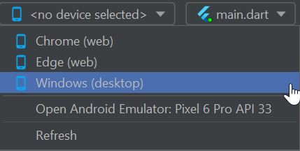

Rapidly develop native cross-platform iOS and Android Apps with Flutter's calling ServiceStack's HTTP and gRPC end-to-end typed .NET API integrations.
Getting Started
Two mix templates to help you build services with Flutter clients are the flutter and flutter-grpc mix templates.
These templates create a new Flutter application using your locally installed Flutter SDK that comes wired up to the ServiceStack project template it is mixed into.
These mix templates can be added to ServiceStack templated projects using the ServiceStack dotnet x tool, which can be installed using the command:
$ dotnet tool install --global x
Pre-requisites
- Flutter SDK
- Dart SDK
- ServiceStack dotnet X tool

New or Existing Project
The Flutter integration works with most ServiceStack templates. It does make the assumption that when working locally, the initial Flutter application will connect to the ServiceStack host via localhost:5001 or if the client is running on an Android Emulator, 10.0.0.2:5001.
For example, you could start with a new web ServiceStack project to host your web services, and add a working Flutter client using the mix template.
$ x new web MyApp
Then from your new solution directory MyApp, mix in the Flutter application using:
$ x mix flutter
Flutter Setup with gRPC
Alternatively, if you want to use gRPC for communication, you can use the grpc project template.
$ x new grpc MyApp
With the flutter-grpc mix template to get a gRPC equivalent setup just as quickly.
$ x mix flutter-grpc
Project Structure
The x mix flutter template uses your locally installed Flutter SDK to create the initial Flutter application via the flutter create command.
It then overrides some source files, and adds some required Dart dependencies to facilitate the integration with your web services.

Running
To develop on your Flutter client, it is best to take advantage of the hot reload functionality of both Flutter and dotnet watch.
ServiceStack App
From your web project directory, navigate into your MyApp AppHost directory and run:
$ dotnet watch
Keep your services running, and open your myapp_flutter directory using Android Studio.
Flutter App
When building application in flutter, you can use various IDEs or editors, but in this example we will be using Android Studio. Flutter applications are written in the Dart Language, and since both are developed by Google, there are great resources for learning both the Dart Language, and the Flutter Framework, included dedicated resources for those familiar with Xamarin.Forms.
When developing on Windows, Android Studio will automatically support web and desktop targets, as well as making it easier to set up and manage Android Emulated devices.

Development
From Android Studio, you can target multiple platforms including Windows, Web and Android. If you are on Windows, targeting a Windows Desktop application can provide a rapid development cycle as Flutter Hot Reload works well and performs quickly. And since ServiceStack can generate client Data Transfer Objects or DTOs, we can have a typed end-to-end service integration when developing Flutter client applications.
Flutter main.dart
The x mix flutter command provides a customized main.dart with a built-in integration of the Hello API service of your local ServiceStack application.
This uses the servicestack Dart package which contains a supported Service Client. To support both web and non-web client targets, a ClientFactory is used with a conditional import of the platform specific service client from servicestack/web_client.dart for web, and servicestack/client.dart for all native platforms.
var baseUrl = "https://localhost:5001";
var clientOptions = ClientOptions(baseUrl: baseUrl);
client = ClientFactory.createWith(clientOptions);
runApp(const MyApp());
The use of Android Emulators for local development is catered for by checking if the application is not in release mode, is not a web platform and if it is running on the Android platform.
if (!kReleaseMode && !kIsWeb) {
if (Platform.isAndroid) {
clientOptions.baseUrl = "https://10.0.2.2:5001";
clientOptions.ignoreCertificatesFor.add(clientOptions.baseUrl);
}
}
This is done since Android Emulators have limited network access, and can only access the ServiceStack application running on the host. Android can only communicate with the host via the aliased 10.0.2.2 IP address from the running emulator.
Flutter Template Overview
Flutter applications use Widgets to build everything you see in a Flutter application.
Widgets describe what their view should look like given their current configuration and state. When a widget’s state changes, the widget rebuilds its description, which the framework diffs against the previous description in order to determine the minimal changes needed in the underlying render tree to transition from one state to the next.
The MyApp widget is the entry point of our application, and the MaterialApp to default your Flutter application to use Material Design as a style or theme.
class MyApp extends StatelessWidget {
const MyApp({super.key});
// This widget is the root of your application.
@override
Widget build(BuildContext context) {
return MaterialApp(
title: 'Flutter Demo',
theme: ThemeData(
primarySwatch: Colors.blue,
),
home: const HelloFlutter(title: 'Flutter Demo Home Page'), // Your app starts here
);
}
}
The HelloFlutter widget is a StatefulWidget which references the HelloFlutterState class where the UI is declared and updates are made to the Flutter UI.
The example application listens for changes from the TextField using a TextEditingController, binding a callService method which fires whenever a change is made.
class HelloFlutterState extends State<HelloFlutter> {
//State for this widget
String result = "";
var myController = TextEditingController();
...
@override
void initState() {
super.initState();
// Listen for changes from the TextField and call our API
myController.addListener(callService);
}
void callService() async {
var text = myController.text.isEmpty ? "World" : myController.text;
var response = await client.get(Hello(name: text));
setState(() {
result = response.result!;
});
}
@override
Widget build(BuildContext context) {
return Scaffold(//...
body: Center(//..
TextField(//..
controller: myController,
)
Calling the Hello API
The callService method is an async method where Dart has a familiar syntax to dotnet. The generated Request and Response DTOs located in the dtos.dart file represent the same messages on our ServiceStack server, so we also get similar syntax and types when compared to calling from a dotnet client.
void callService() async {
var text = myController.text.isEmpty ? "World" : myController.text;
var response = await client.get(Hello(name: text)); // response of type `HelloResponse`.
setState(() {
result = response.result!;
});
}
Updating your client DTOs
During development of your web services, when changes are made to your Request DTO classes, your client sometimes needs to be aware of these changes.
Your client DTOs in the lib/dtos.dart file can be regenerated while your ServiceStack application is running by using the Servicestack dotnet x tool:
$ x dart
If you use Android Studio, there is also a ServiceStack IDEA Plugin for Jetbrains IDEs that can make it easy to quickly update your client DTOs.

INFO
To install the Plugin goto Settings->Plugins->Search Marketplace for ServiceStack.
The dtos.dart file that comes with the Flutter mix template only contains DTOs for the default Hello service, but if other web services are running on your host application, updating your dtos.dart file using one of the above methods will then sync your client and server Request DTOs.
For example, if you use one of our Jamstack templates, there is also a Todo service.
Running x dart in project terminal will update our DTOs, and we can query for Todo items using the following Dart syntax.
Future<QueryResponse<Todo>> queryTodos() async {
return await client.get(QueryTodos());
}
The Todo is a shared model type, so we can use them in our application passing around the same data structure.
Future<Todo> updateTodo(Todo item) async {
return await client.put(UpdateTodo(
id: item.id,
isFinished: (item.isFinished ?? false) ? true : false,
text: item.text));
}
We've made an example codebase called BookingsFlutter to show a more featured cross-platform application integrating with different types of services.
gRPC Examples
Create a new Flutter project with Android Studio:

Add protoc generated TodoWorld DTOs and gRPC GrpcServiceClient to lib/ folder:
x proto-dart https://todoworld.servicestack.net -out lib
Add required dependencies to pubspec.yaml:
dependencies:
fixnum: ^0.10.11
async: ^2.2.0
protobuf: ^1.0.1
grpc: ^2.1.3
Install dependencies by running pub get or clicking on Get Dependencies link in the IDE:

Flutter protoc gRPC insecure Example
Use protoc generated DTOs and GrpcServiceClient to call TodoWorld gRPC Service in _MyHomePageState
class in bin/main.dart:
import 'package:flutter/material.dart';
import 'package:flutter_grpc/services.pbgrpc.dart';
import 'package:grpc/grpc.dart';
//...
class _MyHomePageState extends State<MyHomePage> {
String result = '';
GrpcServicesClient client = GrpcServicesClient(
ClientChannel('todoworld.servicestack.net', port:50054,
options:ChannelOptions(credentials: ChannelCredentials.insecure())));
void _callGrpcService() async {
var response = await client.getHello(Hello()..name="Flutter gRPC");
setState(() {
result = response.result;
});
}
//...
}
Capture the result gRPC API request in the result String then change the Widget build() to
display that instead of _counter then update the floatingActionButton to call your _callGrpcService
method instead:
@override
Widget build(BuildContext context) {
return Scaffold(
appBar: AppBar(
title: Text(widget.title),
),
body: Center(
child: Column(
mainAxisAlignment: MainAxisAlignment.center,
children: <Widget>[
Text(
'gRPC Service Example:',
),
Text(
'$result',
style: Theme.of(context).textTheme.display1,
),
],
),
),
floatingActionButton: FloatingActionButton(
onPressed: _callGrpcService,
tooltip: 'gRPC Service Example',
child: Icon(Icons.play_arrow),
),
);
}
With Flutter's live-reload capability you should be able to see your changes instantly in the Android emulator where clicking the icon should display the result of your plain-text gRPC Service Request:

Flutter protoc gRPC SSL Example
To use gRPC SSL we'll need a copy of our gRPC's Service SSL Certificate which we can make available to our
Flutter App by saving it to our App's assets directory:
mkdir assets
x get https://todoworld.servicestack.net/grpc.crt -out assets
As loading assets is an asynchronous operation we'll need to preload it either by loading it in main() and
passing it as an attribute down to all our components or we can load it in our State widget's initState()
method:
class _MyHomePageState extends State<MyHomePage> {
String result = '';
GrpcServicesClient client;
@override
void initState() {
super.initState();
DefaultAssetBundle.of(context).load("assets/grpc.crt").then((bytes) => setState(() {
client = GrpcServicesClient(
ClientChannel('todoworld.servicestack.net', port:50051,
options:ChannelOptions(credentials: ChannelCredentials.secure(
certificates: bytes.buffer.asUint8List(),
authority: 'todoworld.servicestack.net'
))));
}));
}
void _callGrpcService() async {
var response = await client.getHello(Hello()..name="gRPC SSL");
setState(() {
result = response.result;
});
}
//...
}
You'll also need to update the port to refer to the gRPC SSL endpoint, update your Hello request
so we can verify the result is from the new gRPC SSL request. Now after live-reload has completed,
clicking on the icon will show the response of a gRPC SSL Request:

Refer to /src/mobile/flutter/flutter_grpc for a complete example project.
Flutter gRPC Mix Template
The Flutter integration works with ServiceStack grpc template that has been configured to support gRPC services. It also makes the assumption that when working locally, the initial Flutter application will connect to the ServiceStack gRPC services via localhost:5054 or if the client is running on an Android Emulator, 10.0.0.2:5054.
5054 is the insecure HTTP port that is used by the grpc project template, but if you want to add grpc support to your application using x mix grpc, be sure to set up the use of the same port for local development, or modify your Flutter client to match your server setup.
For example, you could start with a new grpc ServiceStack project to host your services via gRPC, and add a working Flutter client which connects via gRPC using the mix template.
$ x new grpc MyApp
Then from your new solution directory MyApp, mix in the Flutter application using:
$ x mix flutter-grpc
Project Structure
The x mix flutter-grpc template uses your locally installed Flutter SDK to create the initial Flutter application via the flutter create command.
It then overrides some source files, and adds some required Dart dependencies to facilitate the integration with your gRPC services.
Running
To develop on your Flutter client, it is best to take advantage of the hot reload functionality of both Flutter and dotnet watch.
ServiceStack App
From your grpc project directory, navigate into your MyApp AppHost directory and run:
$ dotnet watch
The grpc template is pre-configured listening on 3 ports in the appsettings.json.
https://*:5001- Http1 - Normal Web Service Accesshttps://*:5051- Http2 - Grpc Securehttp://*:5054- Http2 - Grpc Insecure
When developing locally, the Flutter client application accesses gRPC services using the GrpcInsecure endpoints using port 5054.
Keep your services running, and open your myapp_flutter directory using Android Studio.
ServiceStack generates this .proto file used by the client and then provides tooling through the dotnet x tool to generate gRPC client code in Dart, or multiple other languages.
The Flutter client application itself uses Dart libraries like protobuf from Google, the grpc from the Dart team and leverages the optimized servicestack package to improve the development experience.
Since your ServiceStack application host generates the .proto file, you can use any other standard gRPC tooling with this file if you prefer.
var host = "localhost";
var channel = ClientChannel(host, port:5054,
options:const ChannelOptions(credentials: ChannelCredentials.insecure(
)));
var client = GrpcServicesClient(channel);
runApp(const MyApp());
Calling the Hello API
The callService method is an async method where Dart has a familiar syntax to dotnet. The generated gRPC client in the 4 services.*.dart files is baked into the fluter-grpc mix template and contain the initially generated gRPC client.
Calling gRPC services using generated client is similar to using other ServiceStack service clients, but since it is gRPC, we have dedicated methods on our client for our services. Eg, getHello rather than just the verb get.
void callService() async {
var text = myController.text.isEmpty ? "World" : myController.text;
var response = await client.getHello(Hello(name: text));
setState(() {
result = response.result;
});
}
Updating your client DTOs
During development of your web services, when changes are made to your Request DTO classes, your client sometimes needs to be aware of these changes.
We can update both the services.proto file and generated Dart client using the ServiceStack dotnet x tool and the command:
$ x proto-dart https://localhost:5001
This command updates the services.proto file first, and then uses our hosted gRPC client generator to generate a working gRPC client in the language of your choice.
The initial services.*.dart files contain a basic gRPC client for working with the default Hello service, but if other web services are running on your host application, using x proto-dart will then sync your client and generated client as you make changes.
For example, if you use one of our Jamstack templates, and configure gRPC using x mix grpc, there is also a Todo service.
Make your service support gRPC
For a ServiceStack service to support gRPC, it needs to use the [DataContract] and [DataMember(Order = x)] attributes on the types exposed by your generated clients. Once these attributes are added
[Tag("todos")]
[Route("/todos", "GET")]
[DataContract]
public class QueryTodos : QueryData<Todo>
{
[DataMember(Order = 1)]
public int? Id { get; set; }
[DataMember(Order = 2)]
public List<long>? Ids { get; set; }
[DataMember(Order = 3)]
public string? TextContains { get; set; }
}
[DataContract]
public class Todo : IHasId<long>
{
[DataMember(Order = 1)]
public long Id { get; set; }
[DataMember(Order = 2)]
public string Text { get; set; }
[DataMember(Order = 3)]
public bool IsFinished { get; set; }
}
Once updated, re-running your ServiceStack application, we can update our generated gRPC client using x proto-dart from your project directory while your ServiceStack host is running locally.
This will enable you to integrate with the Todo service using the updated client using the following syntax.
Future<QueryResponse_Todo> queryTodos() async {
return await client.getQueryTodos(QueryTodos());
}
gRPC's use of Protocol Buffers does have a number of restrictions in the Types in supports that are worth keeping in mind.
Questions?
Head over to our Customer Forums or GitHub Discussions if you are having issues or have any questions!